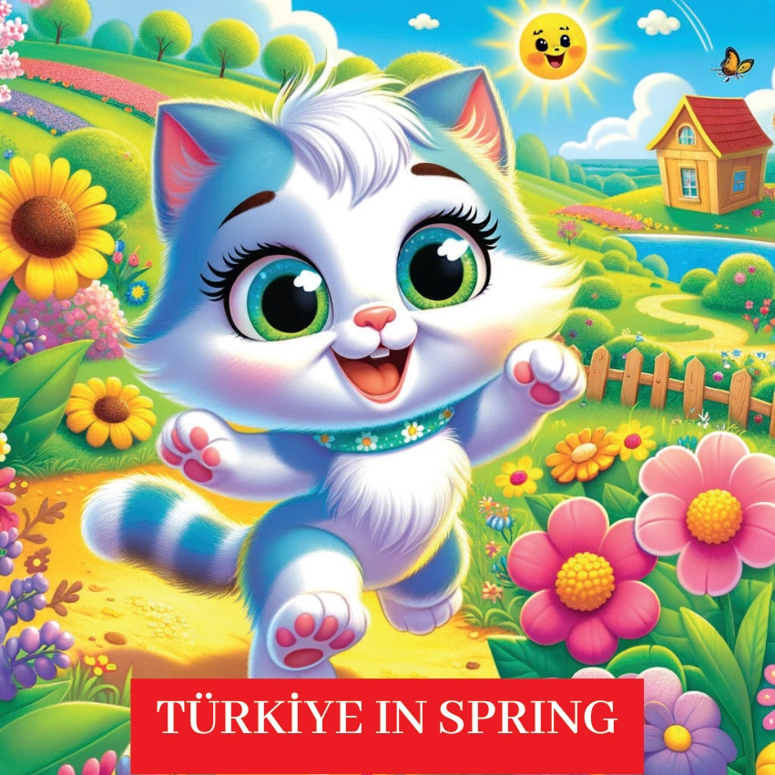
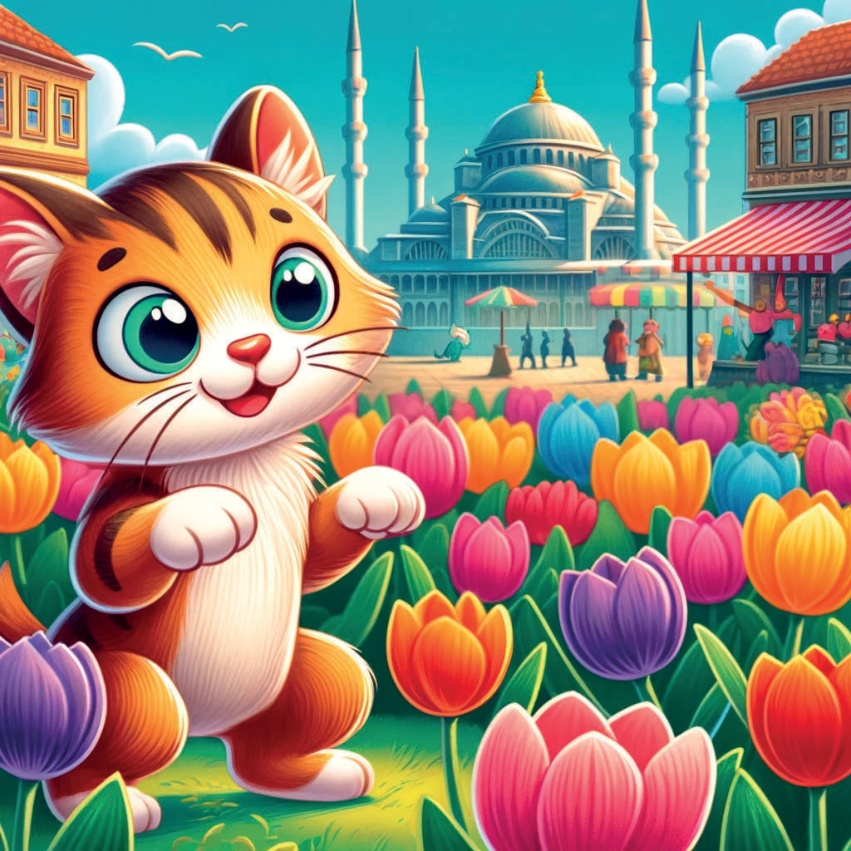
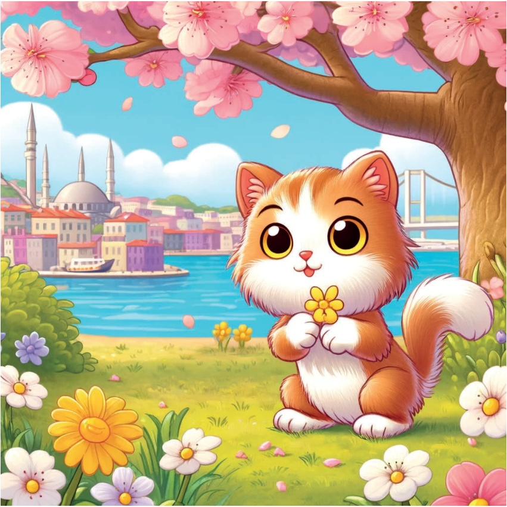
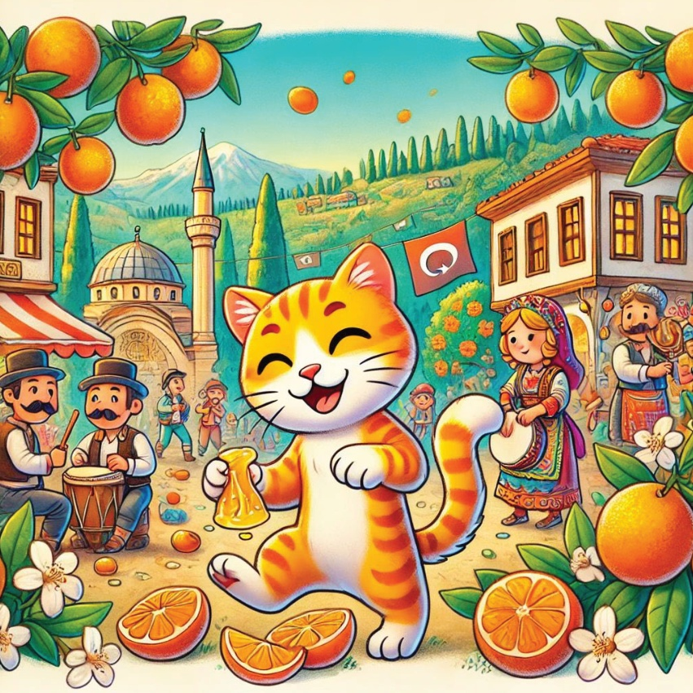
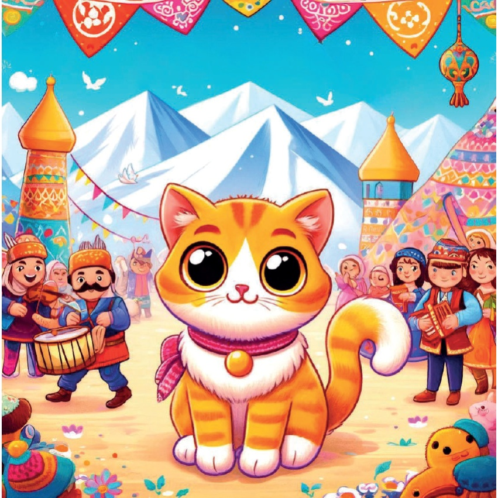
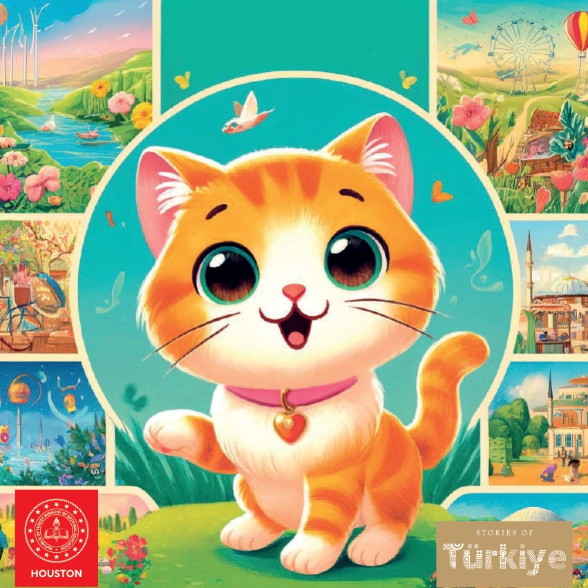

1

2

3
Bir zamanlar, farklı mevsimleri keşfetmeyi seven meraklı küçük bir kedi vardı; adı Karamel'di. Bir gün, Türkiye'nin dört bir yanına seyahat etmeye karar verdi ve baharın güzelliğini ve neşesini deneyimlemek için yola çıktı.
4

5
Marmara Bölgesi - İstanbul:
Lale Festivali
Karamel'in ilk durağı İstanbul oldu ve burada renkli Lale Festivali'nin keyfini çıkardı. Şehir, tam açmış güzel lale bahçeleriyle doluydu ve muhteşem bir manzara oluşturuyordu.
6
7
Ege Bölgesi - İzmir:
Kirsehir Çiçeği Seyri
Sonra Karamel İzmir'e gitti,
burada tam açmış kirsenhir çiçeklerini hayranlıkla izledi.
Pembe ve beyaz çiçekler
büyülü bir atmosfer yarattı.
8

9
Akdeniz Bölgesi - Antalya:
Narenciye Çiçeği Festivali
Antalya'da Karamel narenciye çiçeği festivalini keşfetti.
O güzel çiçekler havayı tatlı bir kokuyla doldurmuştu ve festivaller neşe ve müzikle doluydu.
10

11
Merkez Anadolu - Kapadokya:
Balon Turu
Karamel Kapadokya'ya gitti ve burada bir hava balonu turuna katıldı.
Peribacalarının ve çiçek açan çiçeklerin çarpıcı manzarası yukarıdan bakıldığında daha da nefes kesiciydi.
12
13
Karadeniz Bölgesi - Rize:
Açılır Bahar'da Çay Bahçeleri
Rize'de Karamel, baharın tırmanışında çay bahçelerini ziyaret etti.
Çay bitkileri yemyeşil ve gençti ve yeni sürgünlerin görünümü ferahlatıcıydı.
14
15
Güneydoğu Anadolu - Diyarbakır:
Papatya Tarlaları
Karamel'in sonraki durağı Diyarbakır'dı,
orada açan papatyalarla dolu tarlalarda dolaştı.
Canlı kırmızı çiçekler manzaraya
renk katıyordu.
16
17
Doğu Anadolu - Erzurum:
İlkbahar Festivalleri
Erzurum'da Karamel ilkbahar festivallerinin
mutluluğunu yaşadı.
Geleneksel müzikten, dansa ve ilkbaharın gelişiyle kutlanan
kutlama atmosferinden keyif aldı.
18

19
Kalbi bahar neşesi ve yeni deneyimlerle dolu olan Karamel, Türkiye'nin her bölgesinin kendine özgü bahar güzelliği olduğunu fark etti. Eve döndü ve bir sonraki mevsimsel macerasının hayallerini kurdu.
20
21

22